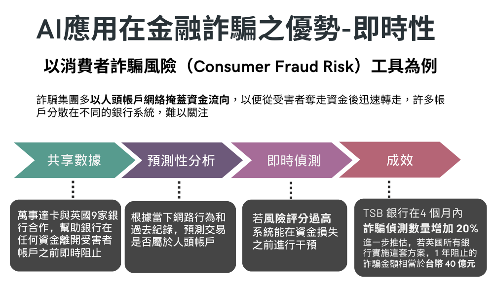
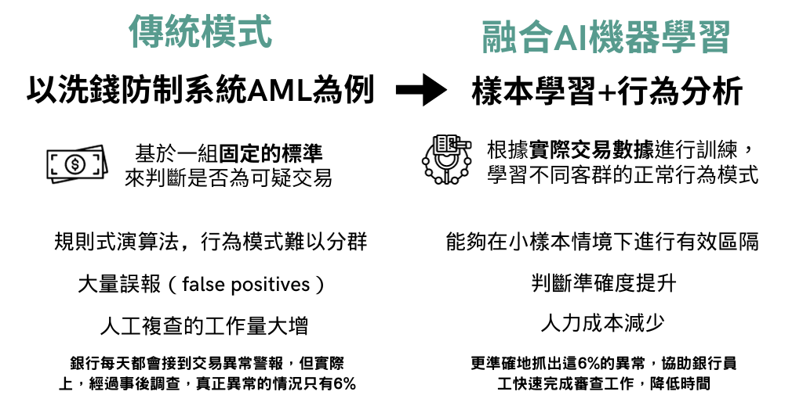

AI在⾦融防詐領域的應⽤分析
研究動機
應用-GAN
優點與缺點
面臨問題與解決辦法
參考資料
優點與缺點
優點:
即時偵測：即時分析大量交易數據，快速辨識詐騙行為及異常的金融活動
小樣本學習：AI的機器學習，能夠在小樣本的情況下進行學習，提高對新型詐騙手法的適應性
行為分析：AI能夠分析客戶的使用模式，建構客戶的行為模型，從而檢測異常的交易
缺點:
個人隱私：AI使用大量客戶的數據進行分析將可能涉及隱私問題
決策黑箱：使用者無法得知AI做出決策的關鍵理由  